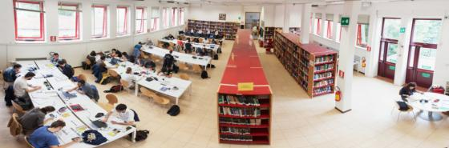

Biblioteca di Chimica

La Biblioteca "Gabriello Illuminati" si è trasferita (per lavori di ristrutturazione) al terzo piano dell’edificio Caglioti del Dipartimento di Chimica.
L’accesso alla biblioteca è consentito a tutti gli interessati alla consultazione di periodici, trattati, collane etc., reperibili presso la biblioteca.
Sono a disposizione dell’utenza due sale per lo studio e la consultazione ed è attiva la attiva la rete Wi-Fi.
PRESTITO:
Il servizio di prestito è riservato agli studenti della Facolta’ di SMFN.
Può essere richiesto per la durata massima di 15 giorni previo deposito del tesserino della biblioteca e compilazione dell’apposito modulo.
Il prestito può essere prorogato di ulteriori 15 giorni.
Eventuali abusi verranno segnalati alla direzione della Biblioteca che potrà sospendere lo studente dal servizio.
Sono escluse dal prestito tutte le opere collocate in Sala Collane, i periodici (sia a fascicoli che a volume) e
le pubblicazioni stampate fino al 1950 facenti parte del fondo pregio.
SERVIZI:
E’ possibile richiedere in consultazione libri, periodici, trattati e collane disponibili presso la biblioteca compilando un apposito modulo e presentando un documento d’identificazione.
I testi in consultazione devono essere restituiti al momento di lasciare la biblioteca o comunque almeno 30 minuti prima della chiusura giornaliera.
COME ARRIVARE:
Dalla Stazione Termini:
BUS:310 o 649
Metro: Linea B fino al Policlinico Umberto I tram 3 o 19

NOTE STORICHE:
Le origini dell'attuale biblioteca del dipartimento di Chimica risalgono all'anno 1872 quando Stanislao Cannizzaro venne chiamato a Roma e tenne presso l'Ateneo i corsi di chimica inorganica e organica, diresse la scuola pratica e organizzò un Istituto di chimica ben attrezzato. Ebbe la sua sede, per sessanta anni circa, nell'orto del vecchio convento di S. Lorenzo in Panisperna (via Panisperna 89) sino a quando, nel corso dell'anno accademico 1939-1940, l'Istituto e la biblioteca vennero trasferiti presso l'attuale città universitaria.
L'inventario dell'ufficio amministrativo della Regia Università di Roma, riporta buoni del 1882 e 1883 con elenchi di materiale librario acquistato presso le antiche librerie Loescher e Hoepli per “uso dell'Istituto Chimico”, probabile sanatoria di una dotazione libraria degli anni 1872-1881.
Nel 1944, poco prima dell’attentato a via Rasella, la biblioteca venne salvata dal prof. Giordano Giacomello che Parravano aveva chiamato all’Istituto Chimico di Roma nel1932(*). Si presentarono un ufficiale della Wehrmacht e due soldati delle SS che avevano ricevuto l’ordine di requisire i volumi della biblioteca in lingua tedesca per spedirli a Berlino distrutta dai bombardamenti. L’ufficiale – che era stato allievo di Giacomello quando era docente a Vienna presso la cattedra del prof. Hermann Mark – lo riconobbe e il professore lo convinse, a guerra quasi finita, a non depauperare il posseduto della biblioteca negoziandone, quindi, il sequestro ma evitandone il trasferimento.
La consistenza patrimoniale della biblioteca dell'Istituto Chimico si è accresciuta con il successivo accorpamento delle biblioteche minori, ma altamente specialistiche, degli Istituti di chimica analitica, chimica fisica, chimica organica e chimica inorganica e generale, assumendo un suo specifico carattere di centralità nel 1968.
Con l'istituzione del Servizio Generale Chimico prima e del dipartimento di Chimica poi, i servizi della biblioteca vengono definitivamente centralizzati, pur se fisicamente dislocati su sedi diverse, presso l'edificio Cannizzaro e l'edificio Caglioti del Dipartimento.
L'attuale patrimonio della Biblioteca – dal 1989 dedicata al prof. Gabriello Illuminati - ha carattere specialistico con materiale vario su discipline afferenti alla chimica, possiede inoltre antiche e pregiate pubblicazioni sia periodiche che a carattere monografico.
(*) Questa informazione è stata desunta da una conversazione avuta con il figlio del prof. Giordano Giacomello, prof. Pierluigi Giacomello , il 5 novembre 2013.